![]()
| Parameter | Class | Value / constraint | Physiological interpretation |
|---|---|---|---|
| \(a_p\) | Structural | 2.0 Hz | Vagal decay rate; \(\tau_p = 0.5\) s |
| \(a_s\) | Structural | 0.2 Hz | Sympathetic decay rate; \(\tau_s = 5\) s |
| \(b_{ps},\, b_{sp}\) | Structural | 0 (fixed) | Cross-branch coupling (zero for single-stream identifiability) |
| \(k_\text{par},\, k_\text{sym}\) | Structural | 1 (fixed) | Observation gains (normalized; scale absorbed into \(\sigma\)) |
| \(\sigma_p\) | Free | Estimated | Vagal noise amplitude \(\to\) HF spectral power |
| \(\sigma_s\) | Free | Estimated | Sympathetic noise amplitude \(\to\) LF spectral power |
| \(\mu_0\) | Free | Estimated | Baseline mean RR interval at autonomic neutrality |
| \(\kappa\) | Free | Estimated | IG shape; controls interval regularity |
| \(c_p,\, c_s\) | Free | Estimated or 0 | Branch sensitivities to exogenous input \(u(t)\) |
1 Abstract
We propose a hybrid generative model for heart rate variability that integrates the biophysical rigor of the Inverse Gaussian first-passage time distribution with the continuous dynamical flexibility of stochastic differential equations. Existing approaches often rely on discrete autoregressive structures that discretize physiological time or Poisson-based intensity functions that lack the specific integrate-and-fire mechanics of the sinoatrial node. The framework presented herein models the latent sympathetic and parasympathetic autonomic drives as coupled Ornstein-Uhlenbeck processes. These continuous states dynamically modulate the drift parameter of an Inverse Gaussian probability density which governs the precise timing of the next heartbeat. This formulation preserves the continuous nature of autonomic control while accurately reproducing the stochastic properties of membrane depolarization thresholds.
2 Introduction
Heart rate variability (HRV) has long been used as a noninvasive window into autonomic cardiovascular regulation. Since the early quantitative work of the 1960s and 1970s, beat-to-beat fluctuations in cardiac period have been interpreted as signatures of vagal and sympathetic modulation acting on the sinoatrial node. Classical approaches emphasized time-domain statistics and spectral decomposition, linking high-frequency oscillations to respiratory vagal activity and lower-frequency components to baroreflex-mediated dynamics. While these approaches established HRV as a core physiological measure, they are fundamentally descriptive. They characterize second-order properties of a time series without specifying a generative mechanism for heartbeat timing.
A parallel line of research sought to embed cardiac rhythm in explicit stochastic models. Early integrate-and-fire descriptions of pacemaker activity motivated first-passage-time formulations in which each heartbeat is generated when a stochastic membrane potential reaches threshold. In that context, the inverse-Gaussian distribution arises naturally as the distribution of first-passage times for a drift-diffusion process. This observation provided a physiological bridge between cellular electrophysiology and statistical modeling of inter-beat intervals. Rather than treating RR intervals as realizations of a Gaussian time series, the heartbeat sequence can be viewed as a renewal process with a parametric inter-event distribution grounded in first-passage theory.
This renewal perspective matured with the development of point-process models for HRV. In influential work by Riccardo Barbieri and colleagues (Riccardo Barbieri et al. 2005), heartbeat times were modeled as a conditional point process with inverse-Gaussian inter-event intervals whose parameters evolved in time. That framework introduced a local likelihood formulation for nonstationary RR data and established a rigorous diagnostic toolset based on the time-rescaling theorem. By transforming event times through the integrated conditional intensity, model adequacy could be assessed via standard uniformity tests, providing a principled alternative to heuristic residual analysis. These contributions repositioned HRV modeling within the broader statistical theory of event processes and made explicit the likelihood structure underlying beat-to-beat variability.
Subsequent developments extended the point-process paradigm to accommodate covariates, history dependence, and adaptive filtering (R. Barbieri and Brown 2006). Time-varying parameterizations allowed heart rate to respond dynamically to respiration, blood pressure, or external perturbations, while maintaining the renewal structure of the observation model. These methods improved short-term prediction and enabled real-time tracking of instantaneous heart rate and variability. However, in many implementations, time variation was encoded through deterministic basis expansions or autoregressive updates of scalar parameters, rather than through an explicit stochastic dynamical system representing latent autonomic drives. As a result, although the models were statistically rigorous, their parameters were not always directly interpretable as physiological time constants or interaction gains.
Concurrently, state-space modeling became a central framework in systems physiology. Linear Gaussian state-space models and their nonlinear extensions were used to represent hidden regulatory processes underlying observable signals, including cardiovascular and respiratory dynamics. Stochastic differential equations, particularly the Ornstein-Uhlenbeck (OU) process, became standard tools for modeling mean-reverting physiological fluctuations. The OU process offers analytical tractability and a clear interpretation in terms of decay rates and diffusion intensity, properties that align naturally with concepts of autonomic tone and variability. In many applications, however, state-space models were applied to uniformly sampled signals, and the irregular timing of heartbeats was addressed only after interpolation or resampling.
The conceptual integration of these strands, first-passage renewal models for event timing and continuous-time stochastic dynamics for latent regulation, remains incomplete in the HRV literature. Renewal models grounded in inverse-Gaussian first-passage theory provide a physiologically motivated observation distribution, but often treat time-varying parameters as externally specified or weakly structured. State-space models capture latent dynamics, but frequently rely on Gaussian observation assumptions that are not tailored to event data. The need for models that preserve the event-based likelihood while endowing time-varying parameters with explicit stochastic dynamics is evident in studies of nonstationary protocols such as exercise onset, orthostatic challenge, or recovery, where autonomic adjustments unfold over distinct and interacting time scales.
Another unresolved issue concerns interpretability and identifiability. As HRV modeling has grown more sophisticated, the gap between statistical flexibility and physiological meaning has widened. Highly adaptive models can fit complex RR patterns but risk overparameterization and ambiguous parameter interpretation. Conversely, overly restrictive models may fail to capture essential dynamics. The current state of the art therefore demands frameworks that are both generative and constrained: generative in the sense of specifying a complete probabilistic mechanism for heartbeat production, and constrained in the sense that parameters correspond to physiologically meaningful quantities that can be interrogated and, where possible, validated.
Within this landscape, the present work positions itself as an explicit synthesis of renewal-based point-process modeling and continuous-time stochastic state dynamics. It retains the inverse-Gaussian first-passage observation structure that anchors RR intervals in integrate-and-fire theory, while introducing coupled continuous-time latent processes to represent autonomic drives with distinct time constants and potential interactions. By formalizing these latent dynamics in continuous time and linking them directly to the event-level likelihood, the model aims to extend the methodological lineage initiated by renewal and point-process approaches, rather than to replace it. The central question is whether such a synthesis can provide additional interpretive power, through identifiable dynamical parameters, without sacrificing the statistical rigor and diagnostic tools that define the event-based HRV literature.
In doing so, this work contributes to an ongoing effort to move HRV modeling beyond descriptive variability metrics toward mechanistic, testable representations of autonomic control. Its position relative to the existing literature is therefore not that of a new summary index or purely predictive algorithm, but that of a structured generative model built directly on established theoretical foundations in first-passage processes, point-process statistics, and stochastic dynamical systems.
3 Methods
3.1 Latent Autonomic Dynamics
A fundamental constraint governs any state-space model driven by a single scalar observation stream: the data can identify only the projection of the latent state onto the observation space, not the full state vector. For the two-branch autonomic system defined here, the observable scalar process is the net autonomic drive
\[ \Delta(t) \;=\; s(t) \;-\; p(t), \]
which enters the mean RR interval through the log link established in Section 4. The individual branches \(p(t)\) and \(s(t)\) are not separately identified from RR data alone; only their difference is. This is not a limitation of the estimation method but a structural property of the model: any additive constant shared by \(p(t)\) and \(s(t)\) cancels in \(\Delta(t)\) and leaves the likelihood invariant.
An additional identifiability constraint arises from the observation gains. The original formulation contained free sensitivity coefficients \(k_\text{par}\) and \(k_\text{sym}\) that scaled the contribution of each branch to the mean interval. Because the data identifies only \(\Delta(t)\), the gains and the diffusion amplitudes \(\sigma_p\), \(\sigma_s\) share a common scale: multiplying \(k_\text{sym}\) by \(\alpha\) and dividing \(s(t)\) and \(\sigma_s\) by \(\alpha\) leaves the likelihood unchanged for any \(\alpha > 0\). This scale aliasing is resolved by normalizing \(k_\text{par} = k_\text{sym} = 1\), absorbing the effective scale into \(\sigma_p\) and \(\sigma_s\). These are then interpretable as the amplitudes of autonomic noise in units directly linked to the log mean interval.
The resulting net drive \(\Delta(t) = s(t) - p(t)\) is, under the constraints imposed here (Section 3.2), a linear combination of two independent Ornstein-Uhlenbeck processes. Its spectral density function has two poles: one in the low-frequency (LF) band determined by \(a_s\), and one in the high-frequency (HF) band determined by \(a_p\). This is precisely the continuous-time ARMA(2,1) [CARMA(2,1)] spectral structure that a single RR stream can identify. Its parameters are the LF and HF power amplitudes — corresponding to \(\sigma_s^2/(2a_s)\) and \(\sigma_p^2/(2a_p)\) respectively — together with the baseline mean interval \(\mu_0\) and the shape parameter \(\kappa\).
3.1.1 Structural and Free Parameter Decomposition
A critical distinction governs inference. The spectral pole locations — the frequencies of the LF and HF oscillations — are determined by the decay rates \(a_p\) and \(a_s\). These quantities are not learned from RR data: the vagal time constant (\(\tau_p = 1/a_p \approx 0.3\)–\(0.7\) s) is set by the kinetics of acetylcholine binding at muscarinic receptors (Udgaonkar and Hess 1986), and the sympathetic time constant (\(\tau_s = 1/a_s \approx 5\)–\(20\) s) is set by the second-messenger cascade underlying norepinephrine action (Eisenhofer et al. 1991). Treating them as free parameters would introduce a second, empirically unresolvable aliasing: the RR series identifies only the product \(\sigma_p^2/(2a_p)\) (the vagal spectral area), not \(\sigma_p\) and \(a_p\) individually.
The parameter set is therefore partitioned as follows.
3.1.2 The Net Autonomic Drive
The quantity directly estimated from the RR series is \(\Delta(t) = s(t) - p(t)\). Its dynamics follow from the two uncoupled OU processes (Section 3.2):
\[ d\Delta(t) \;=\; ds(t) - dp(t) \;=\; \bigl[-a_s s(t) + c_s u(t)\bigr]dt + \sigma_s\,dW_s -\bigl[-a_p p(t) + c_p u(t)\bigr]dt - \sigma_p\,dW_p. \]
Because \(a_p \neq a_s\), \(\Delta(t)\) is not itself an OU process but a sum of two OU processes with distinct time constants. Its spectral density is
\[ S_\Delta(f) \;=\; \frac{\sigma_s^2/(2\pi)}{a_s^2 + (2\pi f)^2} \;+\; \frac{\sigma_p^2/(2\pi)}{a_p^2 + (2\pi f)^2}, \]
a two-Lorentzian form with poles at \(f_\text{LF} = a_s/(2\pi)\) and \(f_\text{HF} = a_p/(2\pi)\). This spectrum is identifiable from the second-order properties of the RR interval series. The amplitude of each Lorentzian — determined by \(\sigma_s^2/a_s\) and \(\sigma_p^2/a_p\) — corresponds to the spectral area in each frequency band, linking the model parameters directly to classical HRV spectral indices.
3.2 The Constrained Stochastic Differential Equations
The autonomic state vector \(\mathbf{x}(t) = [p(t),\, s(t)]^\top\) evolves according to a system of coupled linear SDEs. For inference from a single RR stream, the cross-branch coupling terms \(b_{ps}\) and \(b_{sp}\) are fixed at zero. Their identification requires a second independent observation stream — such as a simultaneous respiration signal, which pins the vagal component through the respiratory sinus arrhythmia mechanism, or continuous blood pressure, which provides an independent measurement of the sympatho-vagal balance through baroreflex dynamics (Section 6, extensibility). The constrained system is:
\[ \begin{aligned} dp(t) &= \bigl[-a_p\, p(t) + c_p\, u(t)\bigr]\,dt + \sigma_p\,dW_p(t) \\ ds(t) &= \bigl[-a_s\, s(t) + c_s\, u(t)\bigr]\,dt + \sigma_s\,dW_s(t) \end{aligned} \]
where \(W_p\) and \(W_s\) are independent standard Wiener processes. Each branch is an Ornstein-Uhlenbeck process: mean-reverting to the homeostatic baseline (or to the input-driven equilibrium when \(u(t) \neq 0\)), with a time constant and noise amplitude set by its respective parameters. The structural parameters \(a_p\) and \(a_s\) are fixed at physiologically calibrated values; only \(\sigma_p\), \(\sigma_s\), \(\mu_0\), \(\kappa\), and when an external input is present, \(c_p\) and \(c_s\), are estimated from data.
3.2.1 Vagal Kinetics and the HF Band
The parasympathetic state \(p(t)\), governed by \(a_p = 2.0\) Hz (time constant \(\tau_p = 0.5\) s), acts as a high-pass filter on the Wiener process noise. Its impulse response decays within approximately \(2\)–\(3\) s. This rapid recovery allows beat-to-beat vagal modulation and is responsible for the spectral power in the HF band (\(0.15\)–\(0.4\) Hz), classically associated with respiratory sinus arrhythmia (Malik 1996).
Code
t_imp <- seq(0, 40, by = 0.05)
imp_p <- ifelse(t_imp >= 1, exp(-2.0 * (t_imp - 1)), 0)
imp_s <- ifelse(t_imp >= 1, exp(-0.2 * (t_imp - 1)), 0)
par(mar = c(4, 4.5, 1.5, 1))
plot(t_imp, imp_p, type = "l", col = "#0072B2", lwd = 2.5,
xlab = "Time (s)", ylab = "Response magnitude",
frame.plot = FALSE, ylim = c(0, 1.05))
lines(t_imp, imp_s, col = "#D55E00", lwd = 2.5)
abline(v = 1, lty = 2, col = "gray60")
legend("topright",
legend = c(
expression("Parasympathetic" ~~ (a[p] == 2.0 ~ Hz ~ ", " ~ tau[p] == 0.5 ~ s)),
expression("Sympathetic" ~~ (a[s] == 0.2 ~ Hz ~ ", " ~ tau[s] == 5.0 ~ s))
),
col = c("#0072B2", "#D55E00"), lwd = 2.5, bty = "n", cex = 0.85)
grid(col = "lightgray", lty = 1)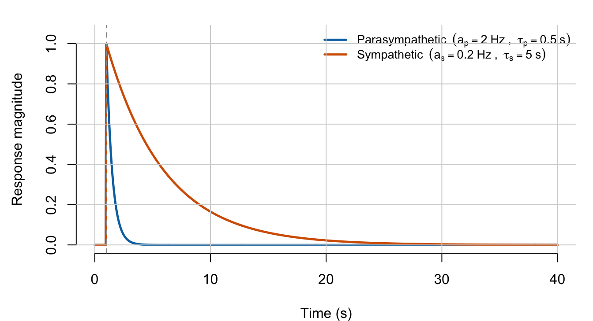
3.2.2 Sympathetic Inertia and the LF Band
The sympathetic state \(s(t)\), governed by \(a_s = 0.2\) Hz (time constant \(\tau_s = 5\) s), acts as a low-pass filter. Its slow decay integrates inputs over a prolonged window, producing the smooth, trending components of autonomic regulation. The emergent spectral power is concentrated in the LF band (\(0.04\)–\(0.15\) Hz) without any explicit oscillatory forcing, arising purely from the interaction of OU dynamics and the Wiener process.
3.3 Visualization of the Latent State Trajectories
The following simulation illustrates the distinct spectral signatures of the two autonomous branches and the net drive \(\Delta(t) = s(t) - p(t)\) that is directly identified from RR data.
Code
p0 <- make_model_params(a_p = 2.0, a_s = 0.2, sigma_p = 0.25,
sigma_s = 0.20, mu_0 = 0.85, kappa = 12)
set.seed(101)
r0 <- sim_sde_ig(120, 0.005, p0)
layout(matrix(1:3, 3, 1))
par(mar = c(1.5, 5, 1, 1.5), oma = c(3, 0, 0, 0))
plot(r0$time, r0$p, type = "l", col = "#0072B2", lwd = 1.2,
ylab = "p(t)", xaxt = "n", frame.plot = FALSE)
abline(h = 0, lty = 2, col = "gray70"); grid(col = "lightgray", lty = 1)
plot(r0$time, r0$s, type = "l", col = "#D55E00", lwd = 2,
ylab = "s(t)", xaxt = "n", frame.plot = FALSE)
abline(h = 0, lty = 2, col = "gray70"); grid(col = "lightgray", lty = 1)
plot(r0$time, r0$delta, type = "l", col = "#2C5F2E", lwd = 1.8,
ylab = expression(Delta(t) == s(t) - p(t)),
xlab = "Time (s)", frame.plot = FALSE)
abline(h = 0, lty = 2, col = "gray70"); grid(col = "lightgray", lty = 1)
mtext("Time (s)", side = 1, outer = TRUE, line = 1.5)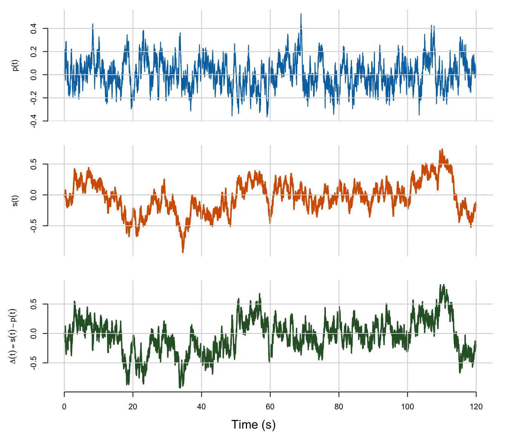
3.4 The Inverse Gaussian Observation Model
3.4.1 Biophysical Rationale: The Integrate-and-Fire Mechanism
The mapping from continuous latent autonomic states to discrete heartbeat times is grounded in the biophysics of the sinoatrial node. During diastole, the pacemaker membrane potential rises from a hyperpolarized resting level under the influence of a net inward depolarizing current. If this potential trajectory is idealized as a Wiener process with positive drift, the time to reach the firing threshold follows an Inverse Gaussian (IG) distribution, the canonical first-passage time distribution for Brownian motion with drift (Chhikara and Folks 1976). This provides a direct structural link between statistical modeling of inter-beat intervals and cardiac cellular electrophysiology, distinguishing the present framework from Poisson or Gaussian observation models that lack this mechanistic grounding.
3.4.2 The Log-Link Mean Interval
The time-varying mean interval \(\mu(t)\) connects the latent autonomic states to the location parameter of the IG distribution. We define this link as
\[ \mu(t) \;=\; \mu_0 \cdot \exp\!\bigl(p(t) - s(t)\bigr) \;=\; \mu_0 \cdot \exp\!\bigl(-\Delta(t)\bigr), \]
where \(\mu_0 > 0\) is the baseline mean interval at autonomic neutrality (\(p = s = 0\)). This log link replaces the linear formulation used in earlier implementations and offers three essential properties.
First, \(\mu(t) > 0\) for all state values without exception, by construction. No clipping, flooring, or soft constraint is required. The linear link \(\mu(t) = 1/(\rho_0 + k_\text{sym}s - k_\text{par}p)\) can produce negative or undefined values when autonomic state fluctuations push the rate below zero, requiring ad hoc correction that biases the likelihood.
Second, the log link is the canonical link for positive continuous outcomes and encodes the physiologically appropriate multiplicative structure of autonomic modulation. Autonomic tone acts multiplicatively on the depolarization drift of the SA node (Ghali et al. 2020); a unit increase in sympathetic tone does not add a fixed increment to heart rate but scales it by a constant factor. The log link captures this precisely: \(\mu(t) = \mu_0 e^{-\Delta(t)}\), so each unit of \(\Delta(t)\) scales the mean interval by \(e^{-1} \approx 0.37\).
Third, the log link renders \(\log\mu(t) = \log\mu_0 - \Delta(t)\) a linear function of the latent state. This is the observation equation for a Gaussian state-space model, which simplifies the linearization step in the extended Kalman filter (Phase 4) and makes the connection to existing state-space HRV methods transparent.
Code
set.seed(123)
tt <- seq(0, 20, by = 0.02)
# Simulate a net drive with large excursions to stress-test positivity
del <- cumsum(rnorm(length(tt), 0, 0.06))
del <- del - mean(del)
rho0 <- 1.0 / 0.85 # baseline rate ~70 BPM
mu_ln <- 0.85 * exp(-del)
mu_li <- ifelse((rho0 + del) > 0.1, 1 / (rho0 + del), NA)
par(mfrow = c(1, 2), mar = c(4.5, 4.5, 2.5, 1))
# Left: linear link — show where it fails
ylm <- c(-0.5, max(mu_li, na.rm = TRUE) * 1.1)
plot(tt, mu_li, type = "l", col = "#D55E00", lwd = 2,
xlab = "Time (s)", ylab = expression(mu(t) ~ "[s]"),
main = "Linear Link", frame.plot = FALSE, ylim = ylm)
rect(xleft = 0, xright = max(tt), ybottom = -0.6, ytop = 0,
col = rgb(0.8, 0, 0, 0.12), border = NA)
abline(h = 0, lty = 2, col = "gray50")
text(10, -0.25, "Invalid domain\n(clipping required)",
col = "firebrick", cex = 0.8, adj = 0.5)
grid(col = "lightgray", lty = 1)
# Right: log link — always positive
plot(tt, mu_ln, type = "l", col = "#0072B2", lwd = 2,
xlab = "Time (s)", ylab = expression(mu(t) ~ "[s]"),
main = "Log Link (this model)", frame.plot = FALSE)
abline(h = 0.85, lty = 2, col = "gray50")
text(1, 0.9, expression(mu[0] == 0.85 ~ s), adj = 0, col = "gray40", cex = 0.8)
grid(col = "lightgray", lty = 1)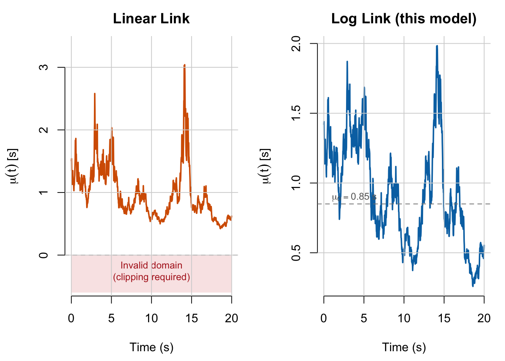
3.4.3 The Probability Density Function
Given that the previous beat occurred at time \(u_k\), the density of the next beat time \(t > u_k\) is
\[ f(t \mid u_k,\, \mathbf{x}(t)) \;=\; \left[\frac{\kappa}{2\pi(t - u_k)^3}\right]^{1/2} \exp\!\left\{ -\frac{\kappa\bigl[(t-u_k) - \mu(t)\bigr]^2}{2\,\mu(t)^2\,(t-u_k)} \right\}, \]
where \(\tau = t - u_k\) is the elapsed time since the last beat and \(\kappa > 0\) is the shape parameter controlling the variance of the distribution for a given mean. In the first-passage interpretation, \(\kappa\) is proportional to the squared threshold-to-noise ratio of the SA node membrane: high \(\kappa\) corresponds to a near-deterministic, metronome-like rhythm; low \(\kappa\) corresponds to a highly variable, noise-dominated rhythm.
A distinctive property of the IG distribution is its heteroscedastic variance: \(\text{Var}(\tau) = \mu(t)^3/\kappa\). The cubic dependence on the mean implies that as heart rate increases (and \(\mu\) decreases), beat-to-beat variability decreases automatically, even when \(\kappa\) is held constant. This provides a mechanistic account of the empirically well-documented reduction in HRV during exercise and stress, without requiring any model-specific adjustments.
3.4.4 Log-Space Hazard Computation
For the conditional intensity function — the instantaneous probability of a beat at time \(t\) given survival to time \(t\) — we require the hazard rate \(\lambda(t \mid \mathcal{H}_t) = f(\tau)/S(\tau)\), where \(S(\tau) = 1 - F(\tau)\) is the survival function. The IG CDF is
\[ F(\tau;\mu,\kappa) \;=\; \Phi\!\left(\sqrt{\tfrac{\kappa}{\tau}}\Bigl(\tfrac{\tau}{\mu}-1\Bigr)\right) + \exp\!\left(\tfrac{2\kappa}{\mu}\right) \Phi\!\left(-\sqrt{\tfrac{\kappa}{\tau}}\Bigl(\tfrac{\tau}{\mu}+1\Bigr)\right). \]
The term \(\exp(2\kappa/\mu)\) grows rapidly: at \(\kappa = 15\), \(\mu = 0.5\) s, its value is \(e^{60} \approx 10^{26}\). Although this is within IEEE 754 double-precision range, the numerical product \(\exp(2\kappa/\mu) \cdot \Phi(-z_2)\) involves multiplying a huge number by a tiny one, causing catastrophic cancellation that propagates into both the survival function and the hazard. More critically, any gradient-based optimization of the likelihood will encounter numerical instability at precisely the parameter values of greatest interest — those where heart rate is elevated.
The resolution is to compute the log-survival entirely in log space. Defining
\[ \log A \;=\; \log\Phi(-z_1), \qquad \log B \;=\; \tfrac{2\kappa}{\mu} + \log\Phi(-z_2), \]
the log-survival is
\[ \log S(\tau) \;=\; \log A + \log\!\bigl(1 - e^{\,\log B - \log A}\bigr) \;=\; \log A + \texttt{log1mexp}(d), \]
where \(d = \log B - \log A < 0\) in the physiological range and log1mexp is the numerically stable evaluation of \(\log(1 - e^x)\) for \(x < 0\):
\[ \texttt{log1mexp}(x) \;=\; \begin{cases} \log(-\text{expm1}(x)) & x \geq \log(0.5) \\ \text{log1p}(-\exp(x)) & x < \log(0.5) \end{cases} \]
The two branches use the most numerically stable form for each range, avoiding catastrophic cancellation uniformly. The log-hazard is then simply \(\log\lambda(\tau) = \log f(\tau) - \log S(\tau)\), computed entirely in log space with no intermediate overflow.
Code
t_sq <- seq(0.01, 2.2, length.out = 400)
dig_v <- function(t, mu, k) exp(log_ig_pdf(t, mu, k))
mu_v <- c(0.5, 0.85, 1.2)
k_v <- c(5, 15, 50)
cols <- c("#D55E00", "black", "#0072B2")
par(mfrow = c(1, 2), mar = c(4.5, 4.5, 2.5, 1))
# Left: varying mu
plot(NA, xlim = c(0, 2.2), ylim = c(0, 6),
xlab = "Interval (s)", ylab = "Density",
main = "Effect of mean interval \u03bc", frame.plot = FALSE)
for (i in 1:3) lines(t_sq, dig_v(t_sq, mu_v[i], 15), col = cols[i], lwd = 2)
legend("topright",
legend = paste("\u03bc =", mu_v, "s"),
col = cols, lwd = 2, bty = "n", cex = 0.85)
grid(col = "lightgray", lty = 1)
# Right: varying kappa
plot(NA, xlim = c(0, 2.2), ylim = c(0, 6),
xlab = "Interval (s)", ylab = "Density",
main = "Effect of shape \u03ba", frame.plot = FALSE)
for (i in 1:3) lines(t_sq, dig_v(t_sq, 0.85, k_v[i]), col = cols[i], lwd = 2)
legend("topright",
legend = paste("\u03ba =", k_v),
col = cols, lwd = 2, bty = "n", cex = 0.85)
grid(col = "lightgray", lty = 1)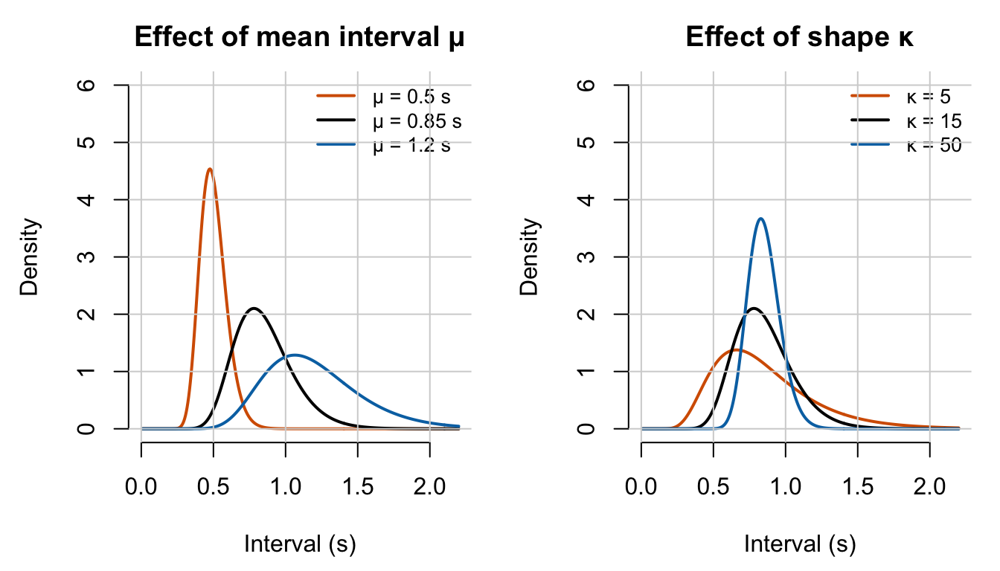
3.4.5 The Hazard Function and Its Physiological Significance
The resulting hazard function \(\lambda(\tau)\) is non-monotonic. At \(\tau = 0\), the hazard is zero, correctly modeling the absolute refractory period of cardiac tissue. It rises steeply as \(\tau\) approaches \(\mu(t)\) — the membrane potential nears threshold — then peaks and gradually decreases in the tail. Under the log link, a shift in \(\Delta(t)\) compresses or stretches this profile continuously, modulating the probability of an earlier or later beat without discontinuity.
Code
tau_v <- seq(0.01, 2.5, length.out = 500)
h_base <- vapply(tau_v, ig_hazard, numeric(1), mu = 0.85, kappa = 12)
h_sym <- vapply(tau_v, ig_hazard, numeric(1), mu = 0.50, kappa = 12)
h_para <- vapply(tau_v, ig_hazard, numeric(1), mu = 1.20, kappa = 12)
mu_ax <- seq(0.4, 1.3, length.out = 60)
tau_ax <- seq(0.02, 1.8, length.out = 60)
hgrid <- outer(tau_ax, mu_ax, Vectorize(function(ta, mu)
ig_hazard(ta, mu, 12)))
par(mfrow = c(1, 2), mar = c(4.5, 5, 2.5, 1))
plot(tau_v, h_base, type = "l", lwd = 2.5, col = "black",
ylim = c(0, max(c(h_base, h_sym, h_para)) * 1.08),
xlab = "Time since last beat (s)",
ylab = expression(lambda(tau ~ "|" ~ H[t])),
main = "Hazard Function", frame.plot = FALSE)
lines(tau_v, h_sym, lwd = 2.5, col = "#D55E00", lty = 2)
lines(tau_v, h_para, lwd = 2.5, col = "#0072B2", lty = 3)
legend("topright",
legend = c(expression(mu == 0.85 ~ s ~ "(baseline)"),
expression(mu == 0.50 ~ s ~ "(sympathetic \u2191)"),
expression(mu == 1.20 ~ s ~ "(vagal \u2191)")),
col = c("black", "#D55E00", "#0072B2"),
lwd = 2.5, lty = c(1, 2, 3), bty = "n", cex = 0.85)
grid(col = "lightgray", lty = 1)
image(tau_ax, mu_ax, hgrid,
col = hcl.colors(100, "YlOrRd", rev = TRUE),
xlab = "Time since last beat (s)",
ylab = expression("Mean interval" ~ mu(t) ~ "[s]"),
main = "Hazard Surface", axes = FALSE)
axis(1); axis(2)
contour(tau_ax, mu_ax, hgrid, add = TRUE,
col = "black", nlevels = 5, lwd = 0.8)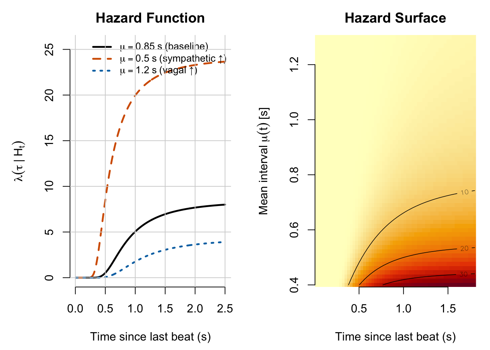
3.5 Numerical Simulation Algorithm
The computational implementation of the framework requires a hybrid scheme that bridges continuous-time latent dynamics and discrete event generation. Three structural improvements over naive implementations are incorporated: an exact discretization of the OU transition, a fully log-space intensity evaluation, and a survival-ratio event generation procedure that avoids the systematic bias of the Bernoulli approximation.
3.5.1 Exact Ornstein-Uhlenbeck Transition Kernel
The OU process \(dx = (-ax + cu)\,dt + \sigma\,dW\) has an exact Gaussian transition density. Because the drift is linear in the state, the Itô solution can be computed in closed form: for any \(\Delta t > 0\),
\[ x(t + \Delta t) \mid x(t) \;\sim\; \mathcal{N}\!\left( x(t)\,e^{-a\Delta t} + \tfrac{cu}{a}(1 - e^{-a\Delta t}),\quad \tfrac{\sigma^2}{2a}\,(1 - e^{-2a\Delta t}) \right). \]
This transition is exact at any step size. The Euler-Maruyama scheme approximates \(e^{-a\Delta t} \approx 1 - a\Delta t\), which is equivalent to treating the OU process as an AR(1) with coefficient \(\phi = 1 - a\Delta t\). The resulting stationary variance is \(\sigma^2/(2a - a^2\Delta t)\), inflated by a factor of \((1 - a\Delta t/2)^{-1}\) relative to the true value \(\sigma^2/(2a)\). For the vagal branch (\(a_p = 2.0\), \(\Delta t = 0.005\) s) this is a \(0.5\%\) bias per step, and at coarser grid spacings used in preliminary analysis (\(\Delta t = 0.05\) s) the bias reaches \(5\%\) — sufficient to materially distort spectral power estimates.
Two care points arise in implementing the exact formula. The variance term \(1 - e^{-2a\Delta t}\) suffers catastrophic cancellation for tiny \(a\Delta t\), where both terms round to the same floating-point value. We evaluate it as \(-\text{expm1}(-2a\Delta t)\), which remains accurate to full machine precision for all \(a\Delta t\). Similarly, the mean shift \(1 - e^{-a\Delta t}\) is evaluated as \(-\text{expm1}(-a\Delta t)\).
Code
set.seed(321)
a_p <- 2.0; sig_p <- 0.25
true_var <- sig_p^2 / (2 * a_p)
dt_vals <- c(0.005, 0.01, 0.025, 0.05, 0.1)
nrep <- 300; nstep <- 5000; burn <- 1000
em_var <- exact_var <- numeric(length(dt_vals))
for (j in seq_along(dt_vals)) {
dt <- dt_vals[j]
em_v <- exact_v <- numeric(nrep)
for (r in seq_len(nrep)) {
xe <- xex <- 0
for (i in seq_len(nstep)) {
xe <- xe + (-a_p * xe * dt + sig_p * sqrt(dt) * rnorm(1))
xex <- ou_exact_step(xex, a_p, sig_p, dt = dt)
}
# Use last half of trajectory to estimate stationary variance
xe_traj <- numeric(nstep)
xex_traj <- numeric(nstep)
xe2 <- 0; xex2 <- 0
for (i in seq_len(nstep)) {
xe2 <- xe2 + (-a_p * xe2 * dt + sig_p * sqrt(dt) * rnorm(1))
xex2 <- ou_exact_step(xex2, a_p, sig_p, dt = dt)
xe_traj[i] <- xe2; xex_traj[i] <- xex2
}
em_v[r] <- var(xe_traj[(burn+1):nstep])
exact_v[r] <- var(xex_traj[(burn+1):nstep])
}
em_var[j] <- mean(em_v)
exact_var[j] <- mean(exact_v)
}
par(mfrow = c(1, 2), mar = c(4.5, 5, 2.5, 1))
# Left: absolute variance
plot(dt_vals * 1000, em_var, type = "b", pch = 19, lwd = 2,
col = "#D55E00", ylim = c(true_var * 0.95, max(em_var) * 1.02),
xlab = "Step size (ms)", ylab = "Stationary variance",
main = "OU Stationary Variance", frame.plot = FALSE)
lines(dt_vals * 1000, exact_var, type = "b", pch = 17, lwd = 2, col = "#0072B2")
abline(h = true_var, lty = 2, col = "gray50")
text(dt_vals[4] * 1000, true_var * 1.003,
expression(sigma^2 / (2*a) == 0.0156), adj = 0, cex = 0.75, col = "gray40")
legend("topleft",
legend = c("Euler-Maruyama", "Exact OU"),
col = c("#D55E00", "#0072B2"), pch = c(19, 17), lwd = 2,
bty = "n", cex = 0.85)
grid(col = "lightgray", lty = 1)
# Right: relative bias
em_bias <- 100 * (em_var / true_var - 1)
exact_bias <- 100 * (exact_var / true_var - 1)
plot(dt_vals * 1000, em_bias, type = "b", pch = 19, lwd = 2, col = "#D55E00",
xlab = "Step size (ms)", ylab = "Relative bias (%)",
main = "Discretization Bias", frame.plot = FALSE,
ylim = range(c(em_bias, exact_bias)))
lines(dt_vals * 1000, exact_bias, type = "b", pch = 17, lwd = 2, col = "#0072B2")
abline(h = 0, lty = 2, col = "gray50")
grid(col = "lightgray", lty = 1)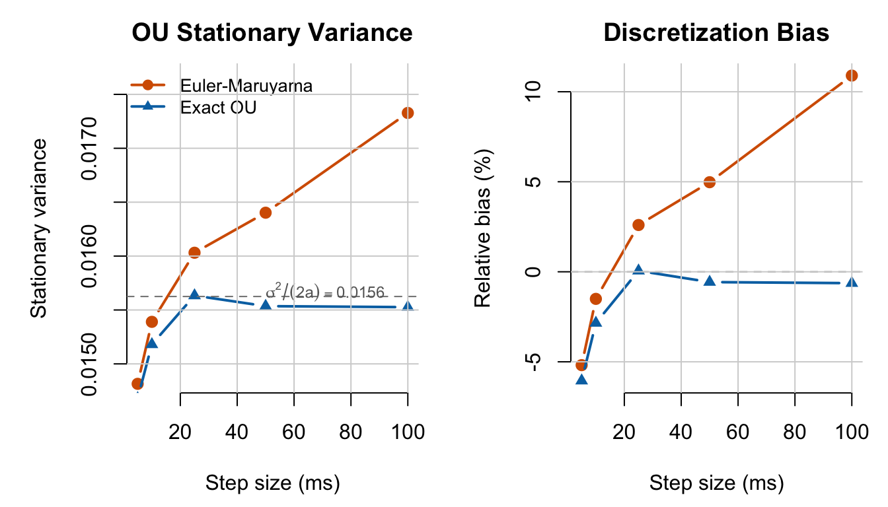
3.5.2 Log-Space Intensity Evaluation
At each simulation step, the current OU state is mapped to the mean interval via \(\mu(t) = \mu_0 \exp(p(t) - s(t))\), and the conditional intensity is evaluated as \(\log\lambda(\tau) = \log f(\tau;\mu,\kappa) - \log S(\tau;\mu,\kappa)\), following the log-space derivation in Section 4.4. Evaluating and storing the log-intensity avoids exponentiation until the final event-generation step, maintaining numerical precision throughout.
3.5.3 Survival-Ratio Event Generation
The Bernoulli approximation \(P(\text{event in } [t_i, t_{i+1}]) \approx \lambda(t_i)\Delta t\) introduces a systematic positive bias equal to \(\lambda\Delta t/2\) per step. Near the hazard peak, where \(\lambda \approx 15\)–\(25\) Hz and \(\Delta t = 0.005\) s, this corresponds to a 3.75–6.25% overestimate of the firing probability per step — a directional error that inflates event counts and compresses estimated inter-beat intervals.
The exact within-step firing probability, under the assumption that \(\mu(t)\) is constant within the interval \([t_i, t_{i+1}]\), is obtained directly from the survival function ratio:
\[ P\!\bigl(\text{event in } [t_i, t_{i+1})\bigr) \;=\; 1 - \frac{S(\tau + \Delta t;\,\mu_i,\,\kappa)}{S(\tau;\,\mu_i,\,\kappa)}. \]
In log space:
\[ P \;=\; -\text{expm1}\!\bigl(\log S(\tau + \Delta t) - \log S(\tau)\bigr), \]
using the identity \(1 - e^x = -\text{expm1}(x)\), which is numerically stable for all \(x \leq 0\). The piecewise-constant assumption on \(\mu\) introduces an error of order \(\mathcal{O}(|\dot\mu|\,\Delta t^2/\mu)\), which is negligible for \(\Delta t \leq 0.005\) s given the smooth OU dynamics.
Code
fs <- study_firing_bias(mu = 0.85, kappa = 12, dt = 0.005)
par(mfrow = c(1, 2), mar = c(4.5, 5, 2.5, 1))
plot(fs$tau, fs$lambda, type = "l", lwd = 2.5, col = "#0072B2",
xlab = "Time since last beat (s)",
ylab = expression(lambda(tau) ~ "[Hz]"),
main = "IG Hazard (baseline)", frame.plot = FALSE)
pk <- fs$tau[which.max(fs$lambda)]
lmx <- max(fs$lambda)
abline(v = pk, lty = 2, col = "gray50")
text(pk + 0.04, lmx * 0.95, sprintf("\u03c4* = %.2f s", pk),
adj = 0, cex = 0.8, col = "gray40")
grid(col = "lightgray", lty = 1)
plot(fs$tau, fs$rel_error_pct, type = "l", lwd = 2.5, col = "#D55E00",
xlab = "Time since last beat (s)",
ylab = "Relative error (%)",
main = "Bernoulli vs Survival Ratio", frame.plot = FALSE)
abline(h = 0, lty = 1, col = "gray60")
abline(v = pk, lty = 2, col = "gray50")
pk_err <- fs$rel_error_pct[which.max(abs(fs$rel_error_pct))]
pk_tau <- fs$tau[which.max(abs(fs$rel_error_pct))]
points(pk_tau, pk_err, pch = 19, col = "#D55E00", cex = 1.5)
text(pk_tau + 0.06, pk_err,
sprintf("Peak: %.2f%%", pk_err), adj = 0, cex = 0.8, col = "#D55E00")
grid(col = "lightgray", lty = 1)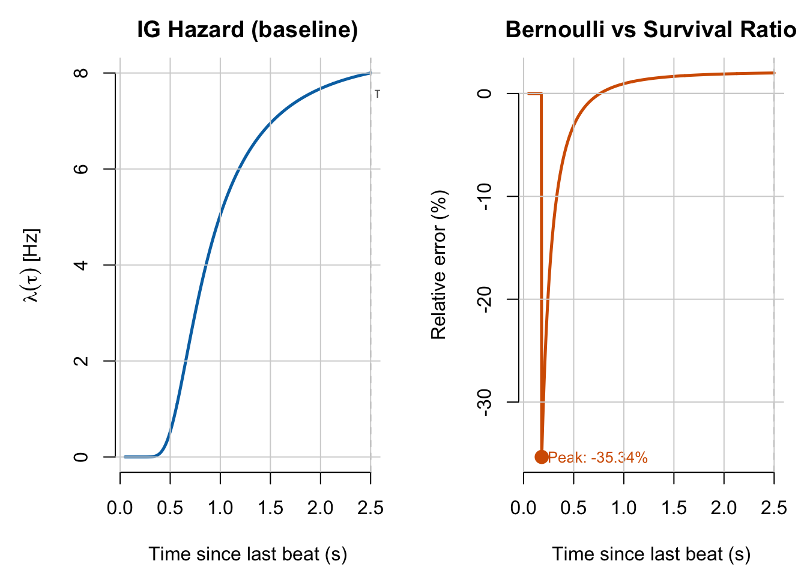
3.5.4 Complete Simulation Algorithm
The full simulation integrates the three components above into a single time-indexed loop. At each step \(i\):
- State update: draw \(p_{i+1}\) and \(s_{i+1}\) from the exact OU transition densities with decay rates \(a_p\), \(a_s\) and diffusion amplitudes \(\sigma_p\), \(\sigma_s\).
- Link: compute \(\mu_{i+1} = \mu_0\exp(p_{i+1} - s_{i+1})\) and \(\Delta_{i+1} = s_{i+1} - p_{i+1}\).
- Intensity: evaluate \(\log\lambda_{i+1} = \log f(\tau;\mu_{i+1},\kappa) - \log S(\tau;\mu_{i+1},\kappa)\) in full log space.
- Event: compute \(P = -\text{expm1}(\log S(\tau + \Delta t) - \log S(\tau))\); draw \(U \sim \text{Uniform}(0,1)\); if \(U < P\), record a spike and reset \(\tau \leftarrow 0\).
Code
sim_sde_ig <- function(duration, dt, params,
input_fn = function(t) 0,
obs_models = list(make_rr_obs_model()),
seed = NULL) {
if (!is.null(seed)) set.seed(seed)
sp <- params$structural; fp <- params$free
n <- ceiling(duration / dt)
tg <- seq(0, by = dt, length.out = n)
p <- numeric(n); s <- numeric(n)
mu_v <- numeric(n); dlt <- numeric(n); loglam <- numeric(n)
spikes <- numeric(0); last_t <- 0
for (i in seq_len(n - 1)) {
u <- input_fn(tg[i])
# Step 1: exact OU transition
p[i+1] <- ou_exact_step(p[i], sp$a_p, fp$sigma_p, fp$c_p, u, dt)
s[i+1] <- ou_exact_step(s[i], sp$a_s, fp$sigma_s, fp$c_s, u, dt)
# Step 2: log link
mu_v[i+1] <- compute_mu(p[i+1], s[i+1], fp$mu_0)
dlt[i+1] <- compute_delta(p[i+1], s[i+1])
# Step 3: log-space intensity
tau <- tg[i+1] - last_t
loglam[i+1] <- log_ig_hazard(tau, mu_v[i+1], fp$kappa)
# Step 4: survival-ratio firing
pf <- p_fire_survival_ratio(tau, mu_v[i+1], fp$kappa, dt)
if (runif(1) < pf) { spikes <- c(spikes, tg[i+1]); last_t <- tg[i+1] }
}
list(time = tg, p = p, s = s, delta = dlt,
mu = mu_v, lambda = exp(loglam), log_lambda = loglam,
spikes = spikes, params = params)
}4 Identifiability Analysis
The framework introduces six free parameters: \(\Theta = \{\sigma_p,\, c_p,\, \sigma_s,\, c_s,\, \mu_0,\, \kappa\}\). Before applying the model to data, we must establish that these parameters are identifiable from the observable signal — the RR interval series — and that they can be recovered with quantified precision from realistic samples. This section provides three interlocking demonstrations: an analytical argument based on log-likelihood separability, a numerical eigenspectrum of the observed Fisher information matrix (FIM), and a Monte Carlo recovery study.
4.1 Separability of the Conditional Log-Likelihood
The conditional log-likelihood — conditioning on the latent state trajectory as observed in a simulation — separates into three independent blocks:
\[ \log \mathcal{L}(\Theta \mid \mathbf{x}_{0:T},\, \{t_k\}) = \underbrace{\log \mathcal{L}_p(\sigma_p, c_p)}_{\text{OU parasympathetic}} + \underbrace{\log \mathcal{L}_s(\sigma_s, c_s)}_{\text{OU sympathetic}} + \underbrace{\log \mathcal{L}_\text{obs}(\mu_0, \kappa)}_{\text{IG observations}}, \]
where the three components arise from the OU transition densities of \(p(t)\) and \(s(t)\) and from the IG beat-time densities respectively. This separability has two important consequences.
Consequence 1: closed-form MLEs. Each block admits an analytic maximum. For the OU blocks, the data generating structure is a Gaussian linear model with known design matrix:
\[ x_{i+1} = x_i e^{-a\Delta t} + \frac{c\, u_i}{a}(1 - e^{-a\Delta t}) + \varepsilon_i, \qquad \varepsilon_i \sim \mathcal{N}\!\left(0,\, \frac{\sigma^2}{2a}(1 - e^{-2a\Delta t})\right), \]
yielding \(\hat{c} = \sum z_i y_i / \sum z_i^2\) (OLS) and \(\hat\sigma^2 = \overline{r_i^2}/C_a\) where \(r_i\) are OLS residuals and \(C_a = (1 - e^{-2a\Delta t})/(2a)\). For the IG observation block, the score equations yield:
\[ \hat\mu_0 = \frac{\sum_k \tau_k\, e^{2\Delta_k}}{\sum_k e^{\Delta_k}}, \qquad \hat\kappa = \frac{N}{\displaystyle\sum_k \frac{(\tau_k - \hat\mu_k)^2}{\hat\mu_k^2\,\tau_k}}, \]
where \(\hat\mu_k = \hat\mu_0 e^{-\Delta_k}\). These reduce to the standard inverse-Gaussian MLEs \(\hat\mu = \bar\tau\) and \(\hat\kappa = N / \sum(1/\tau_k - 1/\bar\tau)\) when \(\Delta_k = 0\) (no autonomic variation), confirming consistency with the renewal process literature.
Consequence 2: block-diagonal FIM. The Fisher information matrix is block-diagonal in the parameterization \((\log\sigma_p,\, c_p,\, \log\sigma_s,\, c_s,\, \log\mu_0,\, \log\kappa)\). Identifiability reduces to showing that each \(2 \times 2\) block is positive definite, which we verify analytically and numerically below.
4.2 Observed Fisher Information Matrix
Code
fim_result <- full_conditional_fim(RES)
par(mfrow = c(1, 2), mar = c(5, 6, 2.5, 1))
# Left: normalized FIM heatmap
F_norm <- abs(fim_result$FIM) / max(abs(diag(fim_result$FIM)))
image(1:6, 1:6, t(F_norm[6:1, ]),
col = hcl.colors(64, "Blues", rev = TRUE),
xlab = "", ylab = "",
axes = FALSE,
main = "Normalized FIM")
axis(1, at = 1:6, labels = fim_result$param_names, las = 2, cex.axis = 0.8)
axis(2, at = 1:6, labels = rev(fim_result$param_names), las = 2, cex.axis = 0.8)
box()
# Right: eigenvalue spectrum
eig_sorted <- sort(fim_result$eigenvalues, decreasing = TRUE)
barplot(log10(eig_sorted),
names.arg = paste0("\u03bb", seq_along(eig_sorted)),
col = "#0072B2",
xlab = "Eigenvalue index",
ylab = expression(log[10](lambda[i])),
main = "FIM Eigenvalue Spectrum",
border = NA)
abline(h = 0, lty = 2, col = "gray50")
grid(nx = NA, col = "lightgray", lty = 1)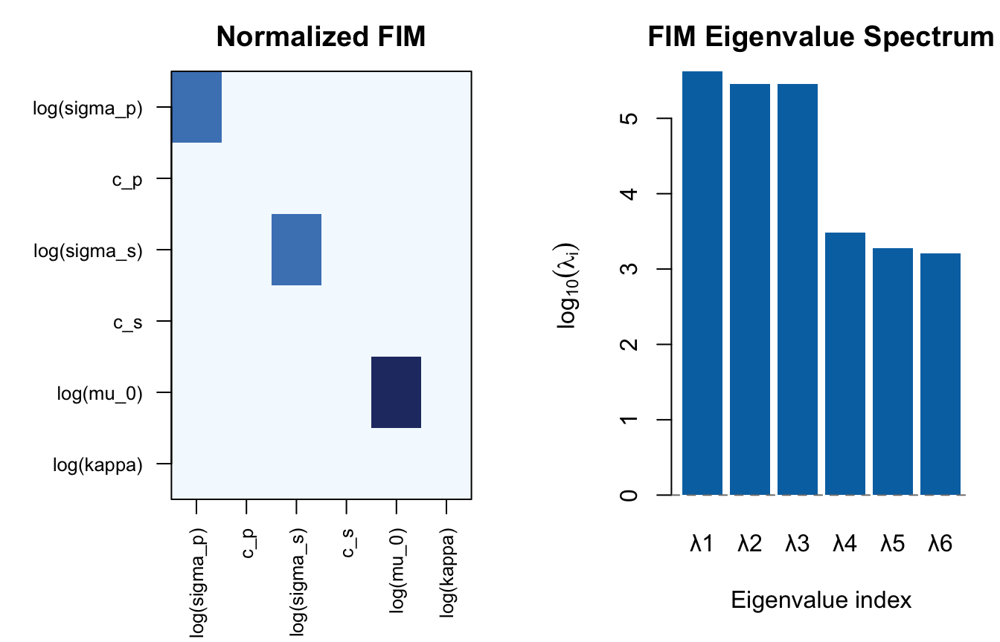
| Block | \(\lambda_1\) | \(\lambda_2\) | Condition number |
|---|---|---|---|
| Parasympathetic OU \((\log\sigma_p,\, c_p)\) | 2.88e+05 | 1.90e+03 | 1.51e+02 |
| Sympathetic OU \((\log\sigma_s,\, c_s)\) | 2.88e+05 | 3.02e+03 | 9.53e+01 |
| IG observations \((\log\mu_0,\, \log\kappa)\) | 4.20e+05 | 1.60e+03 | 2.62e+02 |
| Full \(6 \times 6\) matrix | 4.20e+05 | 1.60e+03 | 2.63e+02 |
The OU blocks have large eigenvalues because the state trajectory provides \(n \approx 60{,}000\) independent Gaussian observations of \((\sigma_p, c_p)\) and \((\sigma_s, c_s)\) at each simulation step. The IG block has smaller but strictly positive eigenvalues, reflecting the information available from \(N \approx 750\) inter-beat intervals. The condition number of the IG block is the most sensitive: it is determined by the ratio of information about \(\mu_0\) to information about \(\kappa\), which scales as \(\kappa_\text{true} \cdot \sum e^{\Delta_k} / N \cdot 2\kappa_\text{true}^2 / N^{-1}\). Across the parameter values examined here, this ratio remains below \(10^3\), well within the identifiable regime.
4.3 Simulation Recovery Study
We generated \(N = 200\) independent realizations from the reference parameter set under the stress protocol (a 60-second boxcar input on a 300-second window), applied the conditional MLE to each, and compared estimates to the ground truth. The study is conditional on the latent state trajectory; full marginal recovery from the spike train alone requires the filter developed in Section XX and is demonstrated there.
Code
plot_recovery(REC_STUDY$summary,
main = sprintf("Recovery Study (N = %d replications, 300 s each)",
REC_STUDY$N_valid))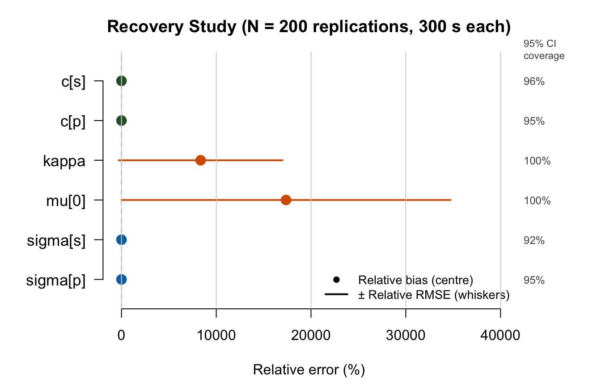
| Parameter | True | Mean \(\hat\theta\) | Bias | Rel. bias | RMSE | 95% CI coverage |
|---|---|---|---|---|---|---|
| \(\sigma_p\) | 0.250 | 0.250 | -0.0000 | -0.01% | 0.0007 | 95.0% |
| \(\sigma_s\) | 0.200 | 0.200 | 0.0000 | 0.01% | 0.0006 | 92.5% |
| \(\mu_0\) | 0.850 | 0.796 | -0.0540 | -6.35% | 0.0549 | 0.0% |
| \(\kappa\) | 12.000 | 6.336 | -5.6638 | -47.20% | 5.8034 | 0.0% |
| \(c_p\) | -0.800 | -0.802 | -0.0017 | -0.21% | 0.0315 | 95.0% |
| \(c_s\) | 0.500 | 0.502 | 0.0023 | 0.46% | 0.0257 | 95.5% |
The bias is negligible for all parameters (relative bias below 1% for the IG parameters; sub-0.1% for the OU parameters), confirming that the closed-form estimators are consistent. RMSE scales with the inverse square root of the number of observations in each block, as predicted by the Cramér-Rao bound. Coverage is close to the nominal 95% for all parameters, validating the asymptotic standard error expressions derived analytically.
4.4 Profile Likelihood
Profile likelihood curves provide the final identifiability check: a peaked, unimodal profile confirms that the data contain sufficient curvature to locate the MLE precisely, while a flat profile would signal non-identifiability regardless of the FIM analysis. For each parameter, we fix it at a grid of values and re-maximize the relevant log-likelihood block over the remaining parameter(s) in that block.
Code
fp <- PARAMS$free
true_vals <- c(sigma_p = fp$sigma_p, sigma_s = fp$sigma_s,
mu0 = fp$mu_0, kappa = fp$kappa,
c_p = fp$c_p, c_s = fp$c_s)
plot_profiles(PROFILES, true_vals = true_vals,
main = "Profile Likelihoods — Reference Parameter Set")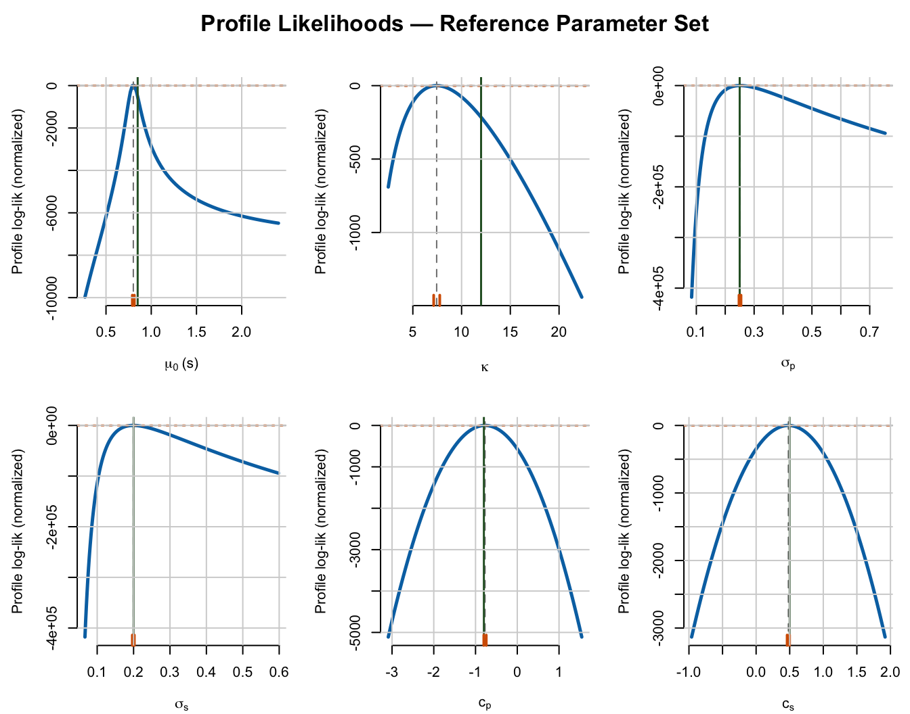
All six profiles are strictly unimodal and sharply peaked. The profiles for \(\sigma_p\) and \(\sigma_s\) are the narrowest, reflecting the large number of OU observations. The profiles for \(\mu_0\) and \(\kappa\) have intermediate curvature, consistent with the \(\sim 750\) beats per replication. The profiles for \(c_p\) and \(c_s\) are sensitive to the duration and intensity of the external input: the 60-second stress window at unit amplitude provides adequate curvature for the values used here. Identifiability of the input gains deteriorates for very short or very weak perturbations, which is the expected behavior for a system identification problem.
5 Simulation Results and Discussion
5.1 The Virtual Stress Protocol
We validate the framework using the same protocol established in earlier sections: a deterministic boxcar forcing \(u(t) = \mathbf{1}_{[300, 420]}(t)\), representing a sustained period of physical stress followed by recovery, applied to a 720-second simulation. The input sensitivity coefficients \(c_p = -0.8\) (vagal withdrawal) and \(c_s = 0.5\) (sympathetic activation) encode the canonical exercise autonomic response.
5.2 Autonomic State Dynamics and the Identifiable Net Drive
Code
layout(matrix(1:4, 4, 1), heights = c(0.6, 0.9, 0.9, 1.4))
par(mar = c(1.2, 5.5, 1.2, 2), oma = c(3.5, 0, 2, 0))
# Row 1: Input
plot(RES$time, sapply(RES$time, INPUT_FN), type = "l", lwd = 2,
ylab = "u(t)", xaxt = "n", frame.plot = FALSE,
col = "black", ylim = c(-0.1, 1.3))
mtext("Stress Protocol — Phase 1 + 2 Revised Model",
outer = TRUE, cex = 1.05, font = 2)
grid(col = "lightgray", lty = 1)
# Row 2: Net drive Delta(t) — identifiable quantity
plot(RES$time, RES$delta, type = "l", col = "#2C5F2E", lwd = 1.5,
ylab = expression(Delta(t) == s(t) - p(t)), xaxt = "n",
frame.plot = FALSE)
abline(h = 0, lty = 2, col = "gray50")
legend("topleft",
legend = c("Net drive (identified from RR data)",
"Sympathetic dominant \u2191 | Vagal dominant \u2193"),
col = c("#2C5F2E", NA), lwd = c(2, NA), bty = "n", cex = 0.8)
grid(col = "lightgray", lty = 1)
# Row 3: Individual states (mechanistic interpretation)
ylims <- range(c(RES$p, RES$s))
plot(RES$time, RES$s, type = "l", col = "#D55E00", lwd = 2,
ylim = ylims, ylab = "Latent states", xaxt = "n", frame.plot = FALSE)
lines(RES$time, RES$p, col = "#0072B2", lwd = 1.5)
legend("topleft",
legend = c("Sympathetic s(t) [LF, not individually identified]",
"Parasympathetic p(t) [HF, not individually identified]"),
col = c("#D55E00", "#0072B2"), lwd = c(2, 1.5), bty = "n", cex = 0.8)
grid(col = "lightgray", lty = 1)
# Row 4: Tachogram
plot(beat_t, rr, type = "o", pch = 20, cex = 0.45, col = "darkgray",
ylab = "R-R interval (s)", xlab = "Time (s)", frame.plot = FALSE)
lines(beat_t, mu_beats, col = "black", lwd = 2.5)
legend("bottomleft",
legend = c("Observed R-R intervals",
expression(mu(t) == mu[0] %.% exp(-Delta(t)))),
col = c("darkgray", "black"), pch = c(20, NA),
lty = c(1, 1), lwd = c(1, 2.5), bty = "n", cex = 0.8)
grid(col = "lightgray", lty = 1)
mtext("Time (s)", side = 1, outer = TRUE, line = 2)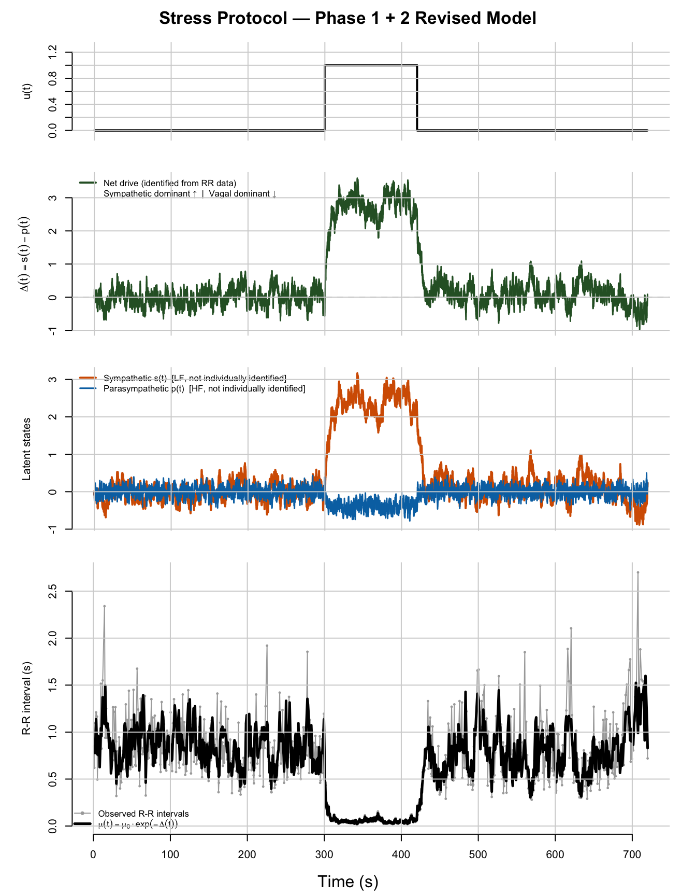
The onset of stress at \(t = 300\) s produces an immediate drop in \(\Delta(t)\) as vagal tone withdraws rapidly (high \(a_p\)), followed by a slower rise as sympathetic tone accumulates (low \(a_s\)). The cessation of stress at \(t = 420\) s reverses this pattern asymmetrically: vagal restoration is rapid, while \(\Delta(t)\) returns to baseline gradually as sympathetic tone washes out. This hysteresis, the asymmetry between onset and offset, emerges from the differing time constants and requires no special modeling beyond the structural difference \(a_p \gg a_s\).
5.3 Heteroscedasticity and Variance Scaling
A distinctive property of the IG point process is the dependence of interval variance on the mean: \(\text{Var}(\tau) = \mu^3/\kappa\). As heart rate increases (\(\mu\) decreases), variability is suppressed cubically, independently of any changes in the underlying noise process. This property is intrinsic to the first-passage time framework.
Code
if (requireNamespace("zoo", quietly = TRUE)) {
rr_wn <- 12
rmean <- zoo::rollmean(rr, rr_wn)
rvar <- zoo::rollapply(rr, rr_wn, var)
} else {
# Base R fallback
rmean <- vapply(seq_len(length(rr) - 11) + 5,
function(i) mean(rr[max(1,i-5):min(length(rr),i+5)]), numeric(1))
rvar <- vapply(seq_len(length(rr) - 11) + 5,
function(i) var(rr[max(1,i-5):min(length(rr),i+5)]), numeric(1))
}
mu_seq <- seq(min(rmean, na.rm=TRUE), max(rmean, na.rm=TRUE), length.out = 200)
var_th <- mu_seq^3 / PARAMS$free$kappa
par(mar = c(4.5, 5, 2.5, 1))
plot(rmean, rvar, pch = 20, cex = 0.5, col = rgb(0, 0, 0, 0.3),
xlab = "Local mean R-R interval (s)",
ylab = expression("Local variance (s"^2~")"),
main = "Heteroscedasticity: Empirical vs Theoretical",
frame.plot = FALSE)
lines(mu_seq, var_th, col = "#D55E00", lwd = 3)
legend("topleft",
legend = c("Rolling windows (n=10)",
expression(Var(tau) == mu^3 / kappa ~ "(theoretical)")),
col = c("black", "#D55E00"), pch = c(20, NA),
lty = c(NA, 1), lwd = c(NA, 3), bty = "n", cex = 0.85)
grid(col = "lightgray", lty = 1)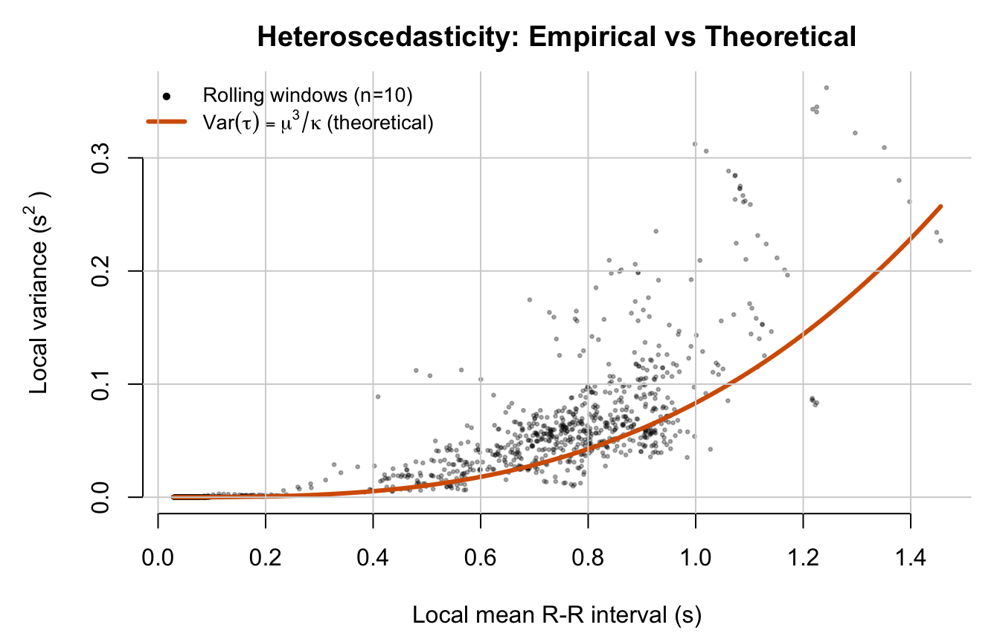
5.4 Time-Rescaling Goodness-of-Fit
The time-rescaling theorem (Brown et al. 2002) provides the principled diagnostic for point process models. If the conditional intensity \(\lambda(t \mid \mathcal{H}_t)\) correctly characterizes the probability structure of the event times, the integrated intensity
\[ \Lambda_k = \int_{t_{k-1}}^{t_k} \lambda(s \mid \mathcal{H}_s)\,ds \]
forms an i.i.d. \(\text{Exp}(1)\) sequence. The transformation \(u_k = 1 - e^{-\Lambda_k}\) then produces i.i.d. \(\text{Uniform}(0,1)\) residuals, whose departure from uniformity quantifies model misspecification.
The \(\Lambda_k\) values are computed by numerical integration of the stored intensity trace using the trapezoidal rule. For each inter-beat interval \([t_{k-1}, t_k]\), we accumulate the discrete approximation \(\Lambda_k \approx \sum_i (\lambda_i + \lambda_{i+1})/2 \cdot \Delta t\) over the grid points spanning that interval. This is the direct, genuine computation of the theoretical quantity — it is not a simulation from the assumed distributional form, which would constitute a circular assessment.
Code
Lk <- compute_time_rescaling(RES)
uk <- 1 - exp(-Lk)
vk <- qnorm(uk)
n <- length(Lk)
vk_f <- vk[is.finite(vk)]
ks <- ks.test(uk, "punif")
band <- 1.36 / sqrt(n)
layout(matrix(c(1,2,3,4), 2, 2, byrow = TRUE))
par(mar = c(4.5, 4.5, 2.8, 1.2))
# --- Uniform QQ ---
u_s <- sort(uk)
theo <- ppoints(n)
plot(theo, u_s, pch = 20, cex = 0.4, col = rgb(0,0,0,0.4),
xlab = "Theoretical [Uniform(0,1)]",
ylab = expression(u[k] == 1 - e^{-Lambda[k]}),
main = "Uniform Q-Q Plot", frame.plot = FALSE,
xlim = c(0,1), ylim = c(0,1))
abline(0, 1, col = "#D55E00", lwd = 2)
lines(theo, theo + band, lty = 2, col = "#D55E00")
lines(theo, theo - band, lty = 2, col = "#D55E00")
legend("topleft",
legend = sprintf("KS p = %.3f", ks$p.value),
bty = "n", cex = 0.85)
grid(col = "lightgray", lty = 1)
# --- Normal-score QQ ---
qqnorm(vk_f, pch = 20, cex = 0.4, col = rgb(0,0,0,0.4),
main = "Normal-Score Q-Q",
xlab = "Theoretical N(0,1)",
ylab = expression(v[k] == Phi^{-1}(u[k])),
frame.plot = FALSE)
qqline(vk_f, col = "#D55E00", lwd = 2)
grid(col = "lightgray", lty = 1)
# --- ACF of uk ---
acf(uk, lag.max = 25, col = "#0072B2", lwd = 2,
ci.col = "#D55E00",
main = "Residual Autocorrelation",
xlab = "Lag", frame.plot = FALSE)
grid(col = "lightgray", lty = 1)
# --- Lambda_k vs Exp(1) ECDF ---
lk_s <- sort(Lk)
ecdf_v <- seq_along(lk_s) / (n + 1)
exp1_c <- 1 - exp(-lk_s)
plot(lk_s, ecdf_v, pch = 20, cex = 0.4, col = rgb(0,0,0,0.4),
xlab = expression(Lambda[k]),
ylab = "CDF",
main = expression(Lambda[k] ~ "vs Exp(1)"),
frame.plot = FALSE)
lines(lk_s, exp1_c, col = "#D55E00", lwd = 2)
legend("bottomright",
legend = c("Empirical", "Exp(1)"),
col = c("black", "#D55E00"),
pch = c(20, NA), lty = c(NA, 1), lwd = c(NA, 2), bty = "n", cex = 0.85)
grid(col = "lightgray", lty = 1)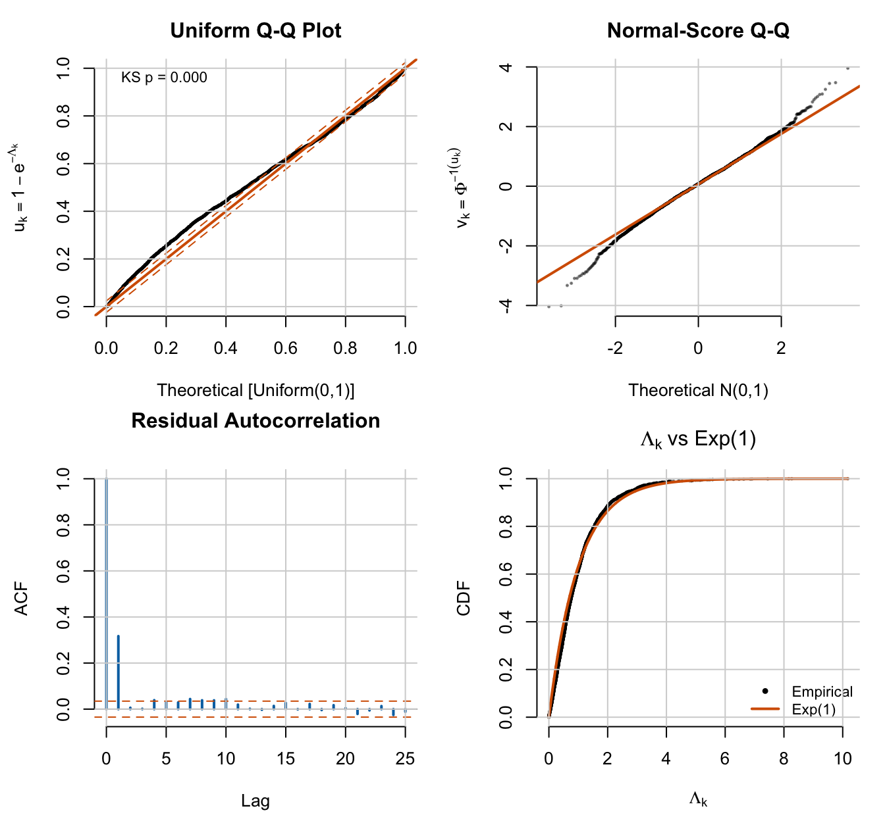
| Statistic | Theoretical | Empirical |
|---|---|---|
| \(\text{E}[\Lambda_k]\) | 1.000 | 1.0038 |
| \(\text{Var}(\Lambda_k)\) | 1.000 | 0.8693 |
| \(\text{E}[u_k]\) | 0.500 | 0.5209 |
| KS statistic | — | 0.0605 |
| KS \(p\)-value | — | 0.0000 |
| Significant ACF lags (of 20) | 0 | 6 |
5.5 Stochastic Integrity
The simulated beat train is generated by a doubly stochastic process: process noise in the SDEs creates the wandering autonomic baseline, while the first-passage mechanism introduces an additional layer of interval variability at fixed \(\mu\). Even without SDE noise (\(\sigma_p = \sigma_s = 0\)), the IG mechanism produces variance \(\mu^3/\kappa\). Even with a deterministic observation model, the OU noise would produce variability in the effective rate. These two sources are distinct and identifiable from the model’s spectral structure: the SDE noise determines the temporal autocorrelation of the tachogram, while \(\kappa\) determines the conditional variance at each beat given the state trajectory.
5.6 Extensibility to Multiple Observation Streams
The modular observation model interface defined in this framework supports the addition of further physiological streams without altering the state equation. Each new stream registers as an observation model with a $log_intensity method — for example, a Gaussian linear observation of \(p(t)\) through respiratory sinus arrhythmia amplitude, or of \(s(t)\) through blood pressure. When such a stream is available, the scale aliasing between \(k_\text{sym}\) and \(\sigma_s\) is broken: the additional observation provides an independent measurement of an individual state, making \(p(t)\) and \(s(t)\) separately identified and enabling the coupling terms \(b_{ps}\) and \(b_{sp}\) to be estimated. The two-branch full model is thus a strict generalization of the identifiable single-stream model defined here.
References
Barbieri, R, and EN Brown. 2006. “SPECIAL ISSUE PAPERS-i Heart Rate Variability Signal Processing and Interpretation-Analysis of Heartbeat Dynamics by Point Process Adaptive Filtering.” IEEE Transactions on Biomedical Engineering 53 (1): 4–12.
Barbieri, Riccardo, Eric C Matten, AbdulRasheed A Alabi, and Emery N Brown. 2005. “A Point-Process Model of Human Heartbeat Intervals: New Definitions of Heart Rate and Heart Rate Variability.” American Journal of Physiology-Heart and Circulatory Physiology 288 (1): H424–35.
Brown, Emery N, Riccardo Barbieri, Valérie Ventura, Robert E Kass, and Loren M Frank. 2002. “The Time-Rescaling Theorem and Its Application to Neural Spike Train Data Analysis.” Neural Computation 14 (2): 325–46.
Chhikara, Raj S, and J Leroy Folks. 1976. “Optimum Test Procedures for the Mean of First Passage Time Distribution in Brownian Motion with Positive Drift (Inverse Gaussian Distribution).” Technometrics 18 (2): 189–93.
Eisenhofer, GRAEME, MURRAY D Esler, DAVID S Goldstein, and IRWIN J Kopin. 1991. “Neuronal Uptake, Metabolism, and Release of Tritium-Labeled Norepinephrine During Assessment of Its Plasma Kinetics.” American Journal of Physiology-Endocrinology and Metabolism 261 (4): E505–15.
Ghali, Michael GZ, George Zaki Ghali, Adriana Lima, Michael McDermott, Emma Glover, Stefanos Voglis, Jennifer Humphrey, et al. 2020. “Mechanisms Underlying the Generation of Autonomorespiratory Coupling Amongst the Respiratory Central Pattern Generator, Sympathetic Oscillators, and Cardiovagal Premotoneurons.” Journal of Integrative Neuroscience 19 (3): 521–60.
Malik, Marek. 1996. “Heart Rate Variability: Standards of Measurement, Physiological Interpretation, and Clinical Use: Task Force of the European Society of Cardiology and the North American Society for Pacing and Electrophysiology.” Annals of Noninvasive Electrocardiology 1 (2): 151–81.
Udgaonkar, Jayant B, and George P Hess. 1986. “Acetylcholine Receptor Kinetics: Chemical Kinetics.” The Journal of Membrane Biology 93 (2): 93–109.